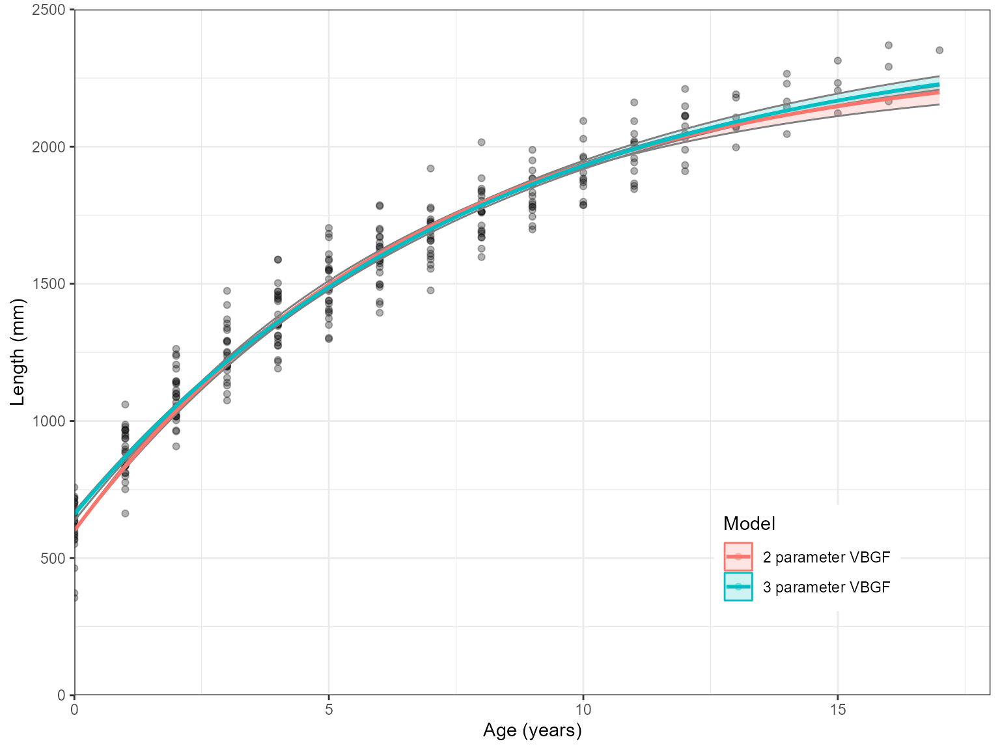

Growth estimation example using the AquaticLifeHistory package
Jonathan Smart
2023-11-13
Source:vignettes/Growth_estimation.Rmd
Growth_estimation.RmdCitation
Please cite this package if it is used in any publication. The citation details can be accessed in the command line:
citation("AquaticLifeHistory")
#> To cite AquaticLifeHistory use:
#>
#> Smart J 2023 AquaticLifeHistory: Fisheries life history analysis
#> using contemporary methods.
#> https://github.com/jonathansmart/AquaticLifeHistory
#>
#> Smart, J. J., Chin, A. , Tobin, A. J. and Simpfendorfer, C. A. (2016)
#> Multimodel approaches in shark and ray growth studies: strengths,
#> weaknesses and the future. Fish and Fisheries, 17: 955-971.
#> doi:10.1111/faf.12154
#>
#> To see these entries in BibTeX format, use 'print(<citation>,
#> bibtex=TRUE)', 'toBibtex(.)', or set
#> 'options(citation.bibtex.max=999)'.Introduction
Growth information attained through length-at-age analysis is a key component in many fisheries analyses. This package gives the user the ability to quickly and efficiently estimate growth for an aquatic species (fishes, sharks, molluscs, crustaceans, etc.) using robust and contemporary techniques. This can be achieved using either a single model approach (i.e. application of a von Bertalanffy growth function) or through a multi-model approach where multiple models are applied simultaneously and compared.This package will provide parameter estimates with errors, length-at-age estimates with bootstrapped confidence intervals, plots and model statistics - providing users with everything required for scientific publication.
Multi-model growth analysis with Estimate_Growth()
Estimate_Growth() is the main function for length-at-age
modelling and offers the user a lot of flexibility which we will run
through. This function applies the multi-model approach outlined in Smart
et al (2016) and will give the user the option of applying three
growth models. These include the von Bertalanffy growth model: \[L_{a}=L_{0}+(L_{\infty}-L_{0})(1-e^{-ka})\]
the Gompertz model: \[L_{a}=L_{0}e^{log(L_{\infty}/L_{0})(1-e^{-ga})})\]
and the Logistic model: \[L_{a}=(L_{\infty}*L_{0}*e^{ga})/(L_{\infty}+L_{0}*e^{ga-1})\]
where \(L_{a}\) is length-at-age \(a\), \(L_{\infty}\) is the asymptotic length and
\(L_{0}\) is the length-at-birth. Each
model has its own growth coefficient (\(k\) = von Bertalanfy, \(g\) = Gompertz and \(g\) = Logistic). These growth coefficients
are incomparable between models (though the Gompertz and Logistic models
share the same notation) whereas the \(L_{\infty}\) and \(L_{0}\) have the same interpretation
between models.
Most applications of growth models for fish have used a \(t_{0}\) rather than \(L_{0}\) which represents the time-at-length-zero rather than a length-at-birth (i.e time-zero). However, \(t_{0}\) does not have the same definition across multiple growth models whereas \(L_{0}\) always refers to length-at-birth. This parameter is therefore used a multi-model approach. \(t_{0}\) can be calculated from the VBGF parameters as: \[t_{0}=(1/k)log(L_{\infty}-L_{0})/L_{\infty})\]
Each of these models provide different growth forms and applying them simultaneously and comparing their fits will increase the chance that an appropriate model is applied to the data. Alternatively, the user can apply a single model or select a combination (see further down).
Using Estimate_Growth() will perform the following:
- Fit the specified growth models using an
nls()function, returning the parameters and summary statistics. - Calculate Akaike’s information criterion (\(AIC\)) values and calculate model weights (\(w\)).
- Bootstrap the data and return 95% confidence intervals for a growth curve over the age range of the data.
- Return a plot with the growth curves with confidence intervals (can be disabled to return raw results).
- Return parameter correlation matrices when requested.
Input data
The data argument of Estimate_Growth()
requires a data.frame of length and age data. However, this function is
flexible and does not require the data to be preprocessed. The function
will automatically determine the “Age” column and the “Length” column by
looking for sensibly named columns. For example, the length column will
accept a column named “Length”, “Len”, “STL”, “TL”, “LT” or “size”. If a
column can’t be distinguished the user will be prompted to rename the
necessary column. This setup means that a data set that contains
additional columns (such as “Sex” or “Date”) can be passed to the
function. The only issue the user should be aware of is that multiple
length columns can’t be provided (i.e “TL” and “FL”).
Example applications
Growth functions can be tested using an included data set which contains length-at-age data for common blacktip sharks (Carcharhinus limbatus) from Indonesia.
library(AquaticLifeHistory)
data("growth_data")
head(growth_data)
#> Age Length Sex
#> 1 0 628.7329 F
#> 2 1 895.8052 F
#> 3 2 1098.3352 F
#> 4 3 1287.5114 F
#> 5 4 1471.1238 F
#> 6 5 1584.6282 FLength-at-age 95% confidence intervals will be produced for the
growth curve through bootstrapping with 1000 iterations being default.
The Estimate_growth() will return a list of parameter
estimates for three candidate models: the von Bertalanffy growth
function (“VB”), Gompertz growth function (“Gom”) and Logistic growth
function (“Log”). The \(AIC\) results
for each model will also be returned as a list element, demonstrating
which growth model best fit the data. A plot will be printed with the
growth curves for all included models.
Estimate_Growth(data = growth_data)
#> $VonB
#> Parameter SE
#> Linf 2439.5652138 50.416331766
#> k 0.1253499 0.006938586
#> L0 659.2971929 14.318722887
#> RSE 97.9461196 NA
#>
#> $Logistic
#> Parameter SE
#> Linf 2163.8640309 26.46867817
#> g 0.2894532 0.01039625
#> L0 727.0885234 13.58771346
#> RSE 110.3850532 NA
#>
#> $Gompertz
#> Parameter SE
#> Linf 2250.136998 32.621706305
#> g 0.207524 0.008455423
#> L0 695.603478 13.779414070
#> RSE 103.855273 NA
#>
#> $AIC
#> Model AICc AIC diff Weight
#> 1 VB 3535.10 0.00 1
#> 2 Log 3605.40 70.30 0
#> 3 Gom 3569.54 34.45 0The Estimate_Growth() function produces these outputs in
three steps:
- Starting parameters for the models are determined using the Ford-Walford method.
- The models are fit to the data using the
nls()function.- The
nls()function can be very fragile and prone to non-convergence if the data is not well suited to a particular model. Using themodelsargument to specify different models is a good way to initially exclude problematic growth models if a non-convergence error message occurs.
- The
- Bootstrapping is performed to determine 95% confidence intervals
along the growth curve. These are included in the plot or returned to
the user if
plots = FALSEis used.- The bootstrap iterations are specified using the
n.bootstrapsargument. The default is 1000.
- The bootstrap iterations are specified using the
Fitting specific models
One model can also be specified using the models
argument:
Estimate_Growth(data = growth_data, models = "VB")#> $VonB
#> Parameter SE
#> Linf 2439.5652138 50.416331766
#> k 0.1253499 0.006938586
#> L0 659.2971929 14.318722887
#> RSE 97.9461196 NA
#>
#> $AIC
#> Model AICc AIC diff Weight
#> 1 VB 3535.1 0 1Or several can be specified:
Estimate_Growth(data = growth_data, models = c("Log", "Gom"))
#> $Logistic
#> Parameter SE
#> Linf 2163.8640309 26.46867817
#> g 0.2894532 0.01039625
#> L0 727.0885234 13.58771346
#> RSE 110.3850532 NA
#>
#> $Gompertz
#> Parameter SE
#> Linf 2250.136998 32.621706305
#> g 0.207524 0.008455423
#> L0 695.603478 13.779414070
#> RSE 103.855273 NA
#>
#> $AIC
#> Model AICc AIC diff Weight
#> 1 Log 3605.40 35.85 0
#> 2 Gom 3569.54 0.00 1Note: The three models must be specified as “VB”, “Log” and “Gom”. Otherwise there will be an error
Estimate_Growth(data = growth_data, models = "VBGF")#> Error in Estimate_Growth(data = growth_data, models = "VBGF", n.bootstraps = 10): Models an only be 'VB', 'Log', 'Gom' or a combination of thesePlot alterations
If you are plotting one model you probably don’t want a legend
included. This can be removed using the plot.legend
argument. This also works when several models are plotted
Results <- Estimate_Growth(data = growth_data, models = "VB", plot.legend = FALSE) Lastly, the y-axis label will automatically scale the unit from mm to cm
based on the input data
Lastly, the y-axis label will automatically scale the unit from mm to cm
based on the input data
new.dat <- growth_data
new.dat$Length <- new.dat$Length/10
Results <- Estimate_Growth(new.dat)Returning length-at-age estimates
It is recommended that users create their own plots for publications.
Therefore setting plots = FALSE will provide these
estimates as an additional list object rather than printing a plot.
results <- Estimate_Growth(data = growth_data, plots = FALSE)
Length_at_age_estimates <- results$Estimates
head(Length_at_age_estimates)#> Model Age AVG low upp
#> 1 Von Bertalanffy 0.0 659.2972 622.9943 689.7049
#> 2 Von Bertalanffy 0.1 681.4736 647.1071 710.3804
#> 3 Von Bertalanffy 0.2 703.3737 670.8837 730.8162
#> 4 Von Bertalanffy 0.3 725.0010 694.3290 751.0150
#> 5 Von Bertalanffy 0.4 746.3589 717.4475 770.9797
#> 6 Von Bertalanffy 0.5 767.4507 740.2437 790.7128Model averaged results with Calculate_MMI
Multi-model inference (MMI) can be useful when no particular candidate model provides a better fit than the others (\(\Delta AIC\) < 2). This involves averaging all models across the growth curve based on their AIC weights (\(w\)). It will return model averaged values of \(L_{\infty}\) and \(L_{0}\) with averaged standard errors. No model averaged growth completion parameters (\(k\) for VBGF, \(g\) for Gompertz or \(g\) for Logistic) are returned as these parameters are not comparable across models.
Calculate_MMI takes the outputs of
Estimate_Growth with plots = FALSE (so that
length-at-age estimates are available) and will calculate MMI parameters
and standard errors as well as model averaged length-at-age
estimates.
results <- Estimate_Growth(data = growth_data, plots = FALSE)
Calculate_MMI(results)#> $`MMI parametrs`
#> Parameter AVG SE
#> 1 Linf 2439.5652 50.41633
#> 2 L0 659.2972 14.31872
#>
#> $`MMI estimates`
#> Age AVG
#> 1 0 659.2972
#> 2 1 870.0338
#> 3 2 1056.0610
#> 4 3 1220.2898
#> 5 4 1365.2883
#> 6 5 1493.3221
#> 7 6 1606.3897
#> 8 7 1706.2545
#> 9 8 1794.4719
#> 10 9 1872.4140
#> 11 10 1941.2914
#> 12 11 2002.1721
#> 13 12 2055.9981
#> 14 13 2103.6006
#> 15 14 2145.7128
#> 16 15 2182.9814
#> 17 16 2215.9772
#> 18 17 2245.2035Be aware that bootstrapping cannot be applied for MMI so no length-at-age errors are available. Also multi-model theory dictates that model averaged errors will be larger than the cumulative errors of candidate models. So don’t be alarmed if you get large parameter standard errors.
Sex specific growth curves
Separating the sexes is common and is achieved by sub setting data
and running the function multiple times. They can then be combined and
plotted afterwards. This can be done for one model or several. Here is
an example using the ggplot2 package.
# Create data.frames of separate sexes
Females <- dplyr::filter(growth_data, Sex == "F")
Males <- dplyr::filter(growth_data, Sex == "M")
# Estimate growth
Female_ests <- Estimate_Growth(Females,n.bootstraps = 1000, plots = FALSE)
Male_ests <- Estimate_Growth(Males, n.bootstraps = 1000,plots = FALSE)
# Combine data sets with a new variable designating sex
Female_LAA <- Female_ests$Estimates
Female_LAA$Sex <- "F"
Male_LAA <- Male_ests$Estimates
Male_LAA$Sex <- "M"
combined_data <- rbind(Male_LAA, Female_LAA)
library(ggplot2)
ggplot(combined_data, aes(x = Age, y = AVG, fill = Model, col = Model)) +
facet_wrap(~Sex, ncol = 1, scales = "free")+
geom_point(data = Males, aes(x = Age, y = Length, fill = NULL, col = NULL), alpha = .3) +
geom_point(data = Females, aes(x = Age, y = Length, fill = NULL, col = NULL), alpha = .3) +
geom_ribbon(aes(ymin = low, ymax = upp, col = NA), alpha = 0.2)+
geom_line(size = 1)+
scale_y_continuous(name = "Length (mm)", limits = c(0,2500), expand = c(0,0))+
scale_x_continuous(name = "Age (years)", limits = c(0,18), expand = c(0,0))+
theme_bw()Combining two and three parameter models
It is common practice for fish species to fix \(L_{0}\) as this parameter has a direct
relation to length-at-birth (often zero for fish). This is done via a
single argument Birth.Len. If this is unspecified then
three parameter models are used. However, if Birth.Len is
specified then two parameters are used with that value used to fix the
\(L_{0}\) parameter.
Estimate_Growth(growth_data, Birth.Len = 600)#> $VonB
#> Parameter SE
#> Linf 2350.0363610 37.543989680
#> k 0.1436146 0.005763834
#> RSE 100.4842123 NA
#>
#> $Logistic
#> Parameter SE
#> Linf 2050.9793943 19.509967669
#> g 0.3807714 0.008422721
#> RSE 124.9385671 NA
#>
#> $Gompertz
#> Parameter SE
#> Linf 2148.7052984 23.646000895
#> g 0.2542661 0.006791104
#> RSE 111.5420183 NA
#>
#> $AIC
#> Model AICc AIC diff Weight
#> 1 VB 3549.09 0.00 1
#> 2 Log 3677.17 128.08 0
#> 3 Gom 3610.48 61.39 0These can be plotted alongside there three parameter versions as well. Here is an example for the VBGF
# Fit models
two_pars <- Estimate_Growth(growth_data, models = "VB", Birth.Len = 600, plots = FALSE)
three_pars <- Estimate_Growth(growth_data, models = "VB", plots = FALSE)
# Change Model name to represent how many parameters they have
two_pars_Ests <- two_pars$Estimates
two_pars_Ests$Model <- "2 parameter VBGF"
three_pars_Ests <- three_pars$Estimates
three_pars_Ests$Model <- "3 parameter VBGF"
combined_data <- rbind(two_pars_Ests, three_pars_Ests)
ggplot(combined_data, aes(x = Age, y = AVG, fill = Model, col = Model)) +
geom_point(data = growth_data, aes(x = Age, y = Length, fill = NULL, col = NULL), alpha = .3) +
geom_ribbon(aes(ymin = low, ymax = upp, col = NA), alpha = 0.2)+
geom_line(size = 1)+
scale_y_continuous(name = "Length (mm)", limits = c(0,2500), expand = c(0,0))+
scale_x_continuous(name = "Age (years)", limits = c(0,18), expand = c(0,0))+
theme_bw() +
theme(legend.position = c(0.8, 0.2))
A two parameter model is demonstrated here for sharks as this is the data used in these examples. However, fixing growth parameters for sharks is less appropriate than techniques such as back-calculation. However, for fish species, length-at-birth is close to zero due to their larval life stage. Therefore, length-at-birth is commonly fixed at zero to represent this.
Correlation matrices
Each of the growth models fit in these analyses have a multivariate
normal distribution. This means that each parameter has a normal
distribution but are correlated to one another. Therefore, if you would
like to use these parameters in simulation analyses, a correlation
matrix is needed to include parameter values in the simulations. This is
not an analysis that is included in this package. However, the ability
to return the correlation matrix is included in the
Estimate_Growth() function by using
correlation.matrix = TRUE.
Estimate_Growth(growth_data, correlation.matrix = TRUE)#> $VonB
#> Linf k L0
#> Linf 1.0000000 -0.9617305 0.4476484
#> k -0.9617305 1.0000000 -0.5986417
#> L0 0.4476484 -0.5986417 1.0000000
#>
#> $Logistic
#> Linf g L0
#> Linf 1.0000000 -0.8190773 0.4284394
#> g -0.8190773 1.0000000 -0.7632669
#> L0 0.4284394 -0.7632669 1.0000000
#>
#> $Gompertz
#> Linf g L0
#> Linf 1.0000000 -0.8981026 0.4488018
#> g -0.8981026 1.0000000 -0.6991582
#> L0 0.4488018 -0.6991582 1.0000000Full details on these approaches can be found in: Smart, J. J., Chin, A. , Tobin, A. J. and Simpfendorfer, C. A. (2016) Multimodel approaches in shark and ray growth studies: strengths, weaknesses and the future. Fish and Fisheries, 17: 955-971.https://onlinelibrary.wiley.com/doi/abs/10.1111/faf.12154 which should be cited if this package is used in a publication.